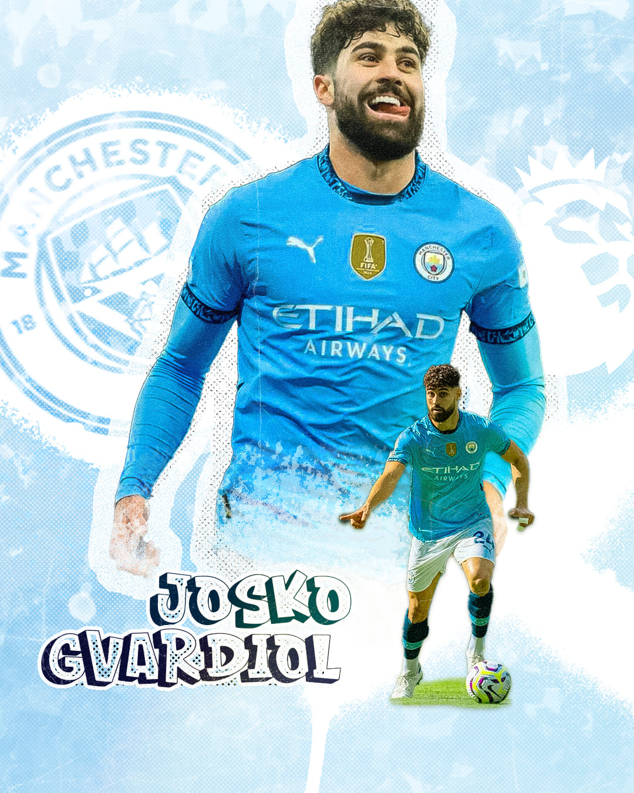

Cette affiche est dédiée à Joško Gvardiol, avec une approche plus puissante et structurée. L’objectif était de représenter sa solidité défensive et sa présence physique à travers une composition claire et dominante. J’ai utilisé les codes visuels du Manchester City pour ancrer le joueur dans son environnement, tout en créant une atmosphère moderne et épurée. Le design met en avant la force et la maîtrise, avec un contraste entre puissance et élégance.
J’ai débuté par une sélection d’images mettant en avant la posture et la présence du joueur. La composition s’est construite autour d’une figure principale forte, accompagnée d’éléments secondaires pour enrichir la scène. J’ai ensuite intégré des textures légères et des effets de lumière pour apporter de la profondeur sans surcharger le visuel. Le travail final s’est concentré sur l’équilibre des couleurs, la lisibilité du texte et la hiérarchie visuelle pour garantir un rendu propre et professionnel